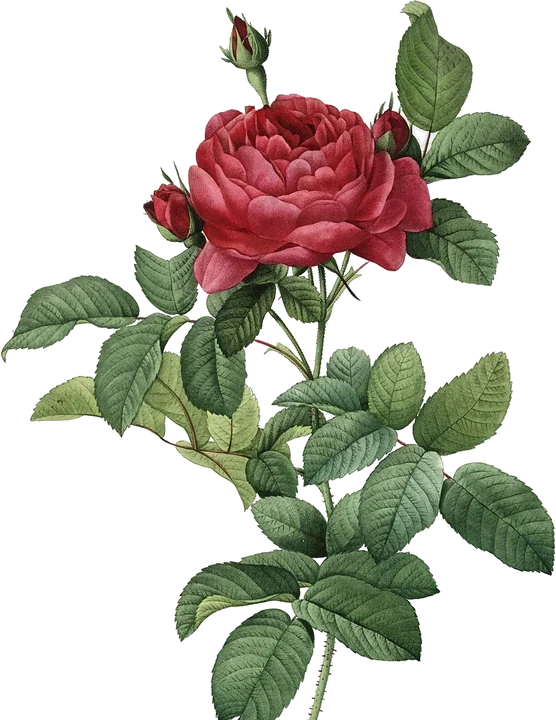
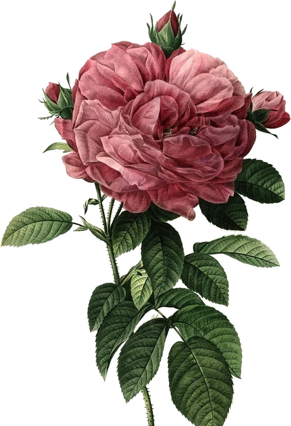

Le 11 octobre 2026
Kim, mon amour ❤️
Ça fait seulement 15 jours qu’on se connaît, 15 jours qu’on est ensemble, et pourtant, je suis déjà complètement accro à toi et fou amoureux de toi. C’est fou comme, en si peu de temps, tu as réussi à prendre une place aussi importante dans mon cœur.
À chaque câlin qu’on se fait, j’ai l’impression que le temps s’arrête. Plus rien n’existe autour de nous, il n’y a que toi et moi. Dans ces moments-là, je me sens tellement bien que je n’ai plus envie de te lâcher. J’aimerais pouvoir rester des heures dans tes bras, à profiter de ta présence, de ton sourire et de tout ce qui fait que tu es toi.
Tu es une fille forte, courageuse, qui a sûrement dû affronter beaucoup de choses. Mais je veux que tu saches une chose : maintenant, tu n’es plus toute seule. Tu peux te reposer sur moi, me parler de tout, me confier tes peurs, tes doutes comme tes joies. Je serai toujours là pour t’écouter, te soutenir, te rassurer et t'accompagner, même dans les moments les plus difficiles. Je veux être cette personne auprès de qui tu peux être toi-même, sans avoir besoin de faire semblant d’aller bien.
J’ai tellement envie de vivre des choses de fou à tes côtés, de créer des souvenirs inoubliables, de partir à l’aventure, de rire jusqu’à en avoir mal au ventre, de faire plein de petites choses toutes simples qui deviendront extraordinaires juste parce que je les partagerai avec toi.
Je sais que ça ne fait que 15 jours, et qu’on a encore énormément de choses à découvrir l’un sur l’autre, mais une chose est sûre : je veux prendre le temps de construire quelque chose de beau et de sincère avec toi. Je ne sais pas exactement ce que l’avenir nous réserve, mais j’espère de tout mon cœur qu’il nous réserve une très longue histoire.
Je ne te promets pas que tout sera toujours parfait, mais je te promets de faire de mon mieux pour te rendre heureuse, te faire sourire et te montrer chaque jour à quel point tu comptes pour moi.
En seulement 15 jours, tu es devenue mon sourire préféré, mon câlin préféré et surtout la personne que je n’ai jamais envie de quitter.
Je t’aime, Kim, et j’espère que ces 15 premiers jours ne sont que le début d’une magnifique histoire à deux. ❤️
Enzo